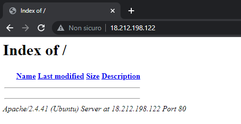
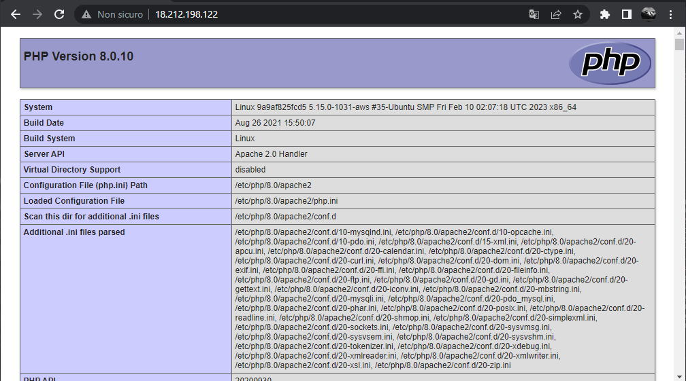
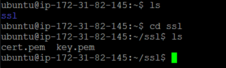
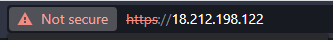
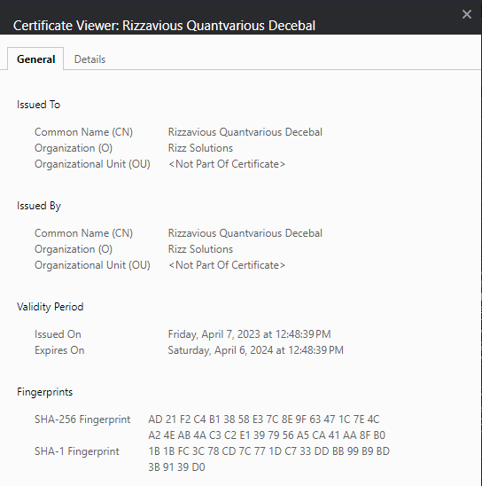

2. Setting up LAMP
2.1 System configuration
The first thing that should be always done when configuring a fresh linux install is to update
the repository list with apt update and then install the new packages with apt upgrade, so go ahead and insert these commands
in your terminal. With it, we're also going to install docker.io
sudo apt update
sudo apt upgrade
sudo apt install docker.io
2.2 Creating the docker containers
There is a LAMP stack container that we can use that is already preconfigured from mattrayner/lamp, so let's install it with this command
sudo docker run -d --name lamp -i -t -p "80:80" -v ~/app:/app mattrayner/lamp:latest
Here we are creating a docker container, detaching from its process with -d, giving it a --name of lamp, exposing it on the port 80 and binding
the container's /app dir to a directory with the same that will be created in the user's PWD folder.
The ~/app directory is the root folder of the apache+php webserver, in here you can place your css, html, php and js files.
To check if the installation worked, check if the container is running with this command
sudo docker ps
Then simply get your EC2 instance's public IP and put it in a browser, you should see something similar
Let's create an index.php file in the ~/app dir to see if it works
cd ~/app
touch index.php
Then you can edit the index.php file to show phpinfo() with either vi, nano or any other editor you like. The file content should look like this.
Go to your EC2 instance's public IP and you should see that everything is working!
2.3 Creating the SSL certificate (optional)
We are going to create the /ssl directory containing the ssl key and certificate in the user's home dir, to do this follow the instructions from this command
mkdir ~/ssl
sudo openssl req -x509 -nodes -days 365 -newkey rsa:2048 -keyout ~/ssl/key.pem -out ~/ssl/cert.pem
If you've done everything correctly, you should see a cert.pem and a key.pem file in the ~/ssl directory
Now we need a way to bind the SSL certificate to our website, to do this we can create a proxy using fsouza/docker-ssl-proxy on the port 443
by specifying where our certificates are, in this case we put them in ~/ssl. You also need to set the correct domain for your machine
sudo docker run -d --name ssl-proxy --link lamp:proxyapp -p 443:443 -e DOMAIN=YOUR_EC2_PUBLIC_IP -e TARGET_PORT=80 -e TARGET_HOST=proxyapp -e SSL_PORT=443 -v ~/ssl:/etc/nginx/certs --restart unless-stopped fsouza/docker-ssl-proxy
If you go to https://YOUR_EC2_PUBLIC_IP you shold now see this
And you can see the certificate information
2.4 Automating the startup
Now that everything is configured let's create a .sh script to start/restart the lamp and proxy-ssl containers authomatically
sudo docker start
# Kill all running containers
containers=$(docker ps -q)
docker kill $containers
# Start lamp and proxy server
sudo docker start lamp
sudo docker start proxy-ssl
Your LAMP stack is now working! Go onto the next section to learn how to make a private area
3. Creating a private area